Schumbl Schmookies: Cookie Supply Chain Console — UI/UX, Branding, Prototyping
Software used: Figma, Figma Make
When applying to Pennspark, we were given a design brief to make a supply chain for Jimmy, a manager for Schumbl Schmookies. To respond to his needs I made a multi-view table with a transfer feature that allows for direct action when given ingredient insufficiency and expiration.
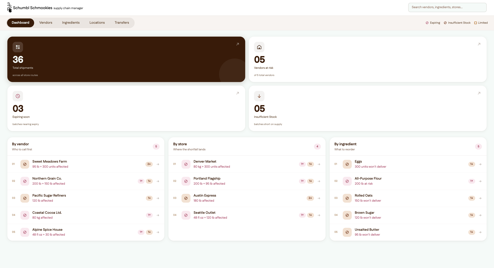
Figma Link: https://plow-number-95700341.figma.site
Process
1. Identify Main Points of Design Brief
Who is this design for
Jimmy, supply chain manager of Schumbl Schmookies
What is this design being used for
Manage ingredient quantities, minimize loss from expiration or insufficient stock, each bakery has what it needs
Where is this design being utilized
Nationwide cookie chain: ingredients, suppliers, recipes, bakery locations, vendors
2. Breaking Down User Needs
Need: manage ingredient quantities + each bakery has what it needs
→ ingredient quantities come from vendors which could possibly provide multiple ingredients each
→ ingredients are needed at specific amounts at bakery locations
→ ingredients are used in specific recipes in permanent and limited edition cookie flavors
Need: minimize loss from expiration
→ each vendor could have delays or specific ingredients could have an issue with them
→ each location could have expiring/insufficient items
→ certain ingredients might have more insufficient/expiring risks than other ingredients
Pattern: all the user needs require the same data (vendors, locations, ingredients) but in different formats
3. Turn the User Needs Pattern Into a User Flow
Pattern: all the user needs require the same data but in different formats
Format That Suits This: Table on Desktop
• cleanly displays data
• can have multiple views for data while maintaining continuity
• can switch between views to get different perspectives on data depending on need (ex. if a certain crop recently got a disease you can look at the ingredient page to prioritize that)
• houses lots of data for important decisions → best used on a desktop that has the largest viewing frame and can therefore see the most data at a time
4. Define Data Being Used
Need: manage ingredient quantities + each bakery has what it needs
→ ingredient quantities come from vendors which could possibly provide multiple ingredients each
• vendor general information (MOQs, price/unit, bulk discounts, location), locations each vendor serves
→ ingredients are needed at specific amounts at bakery locations
• at each location: estimated ingredient need, current ingredient stock
→ ingredients are used in specific recipes in permanent and limited edition cookie flavors
• cookie types (limited edition or not), limited edition duration, limited edition estimated # sold
Need: minimize loss from expiration
→ each vendor could have delays or specific ingredients could have an issue with them
• vendor ingredient stocking + risks per ingredient
→ each location could have expiring/insufficient items
• ingredient list stocking + info on risks per ingredient at each location
→ certain ingredients might have more insufficient/expiring risks than other ingredients
• # of risks per ingredient + info on risks
5. Create Lo-Fi Wireframes
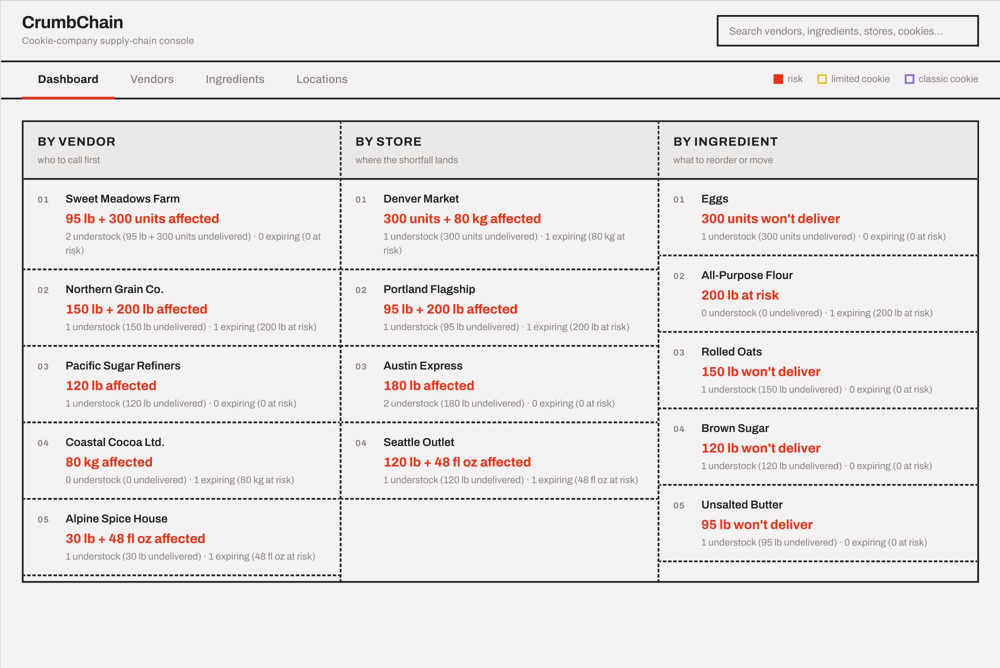
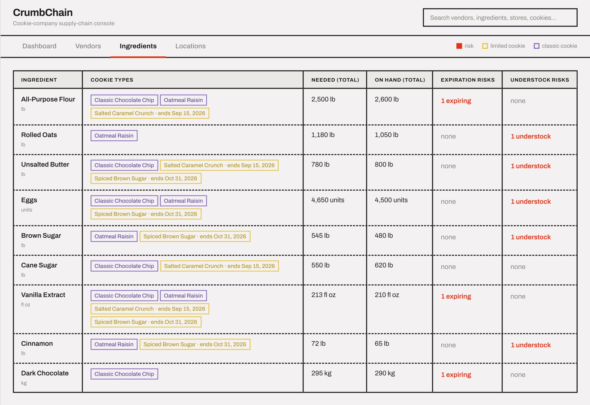
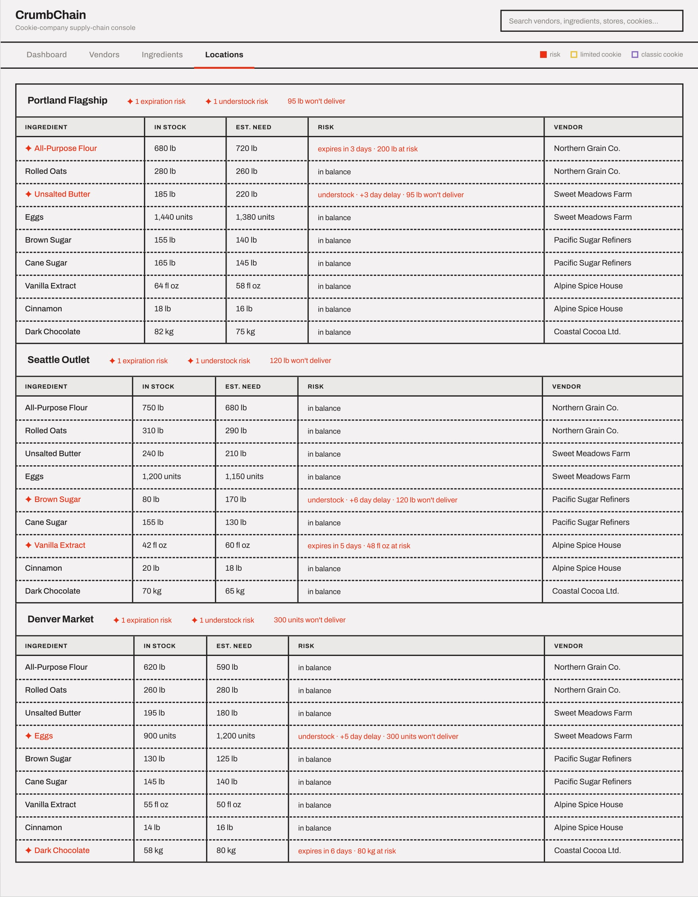
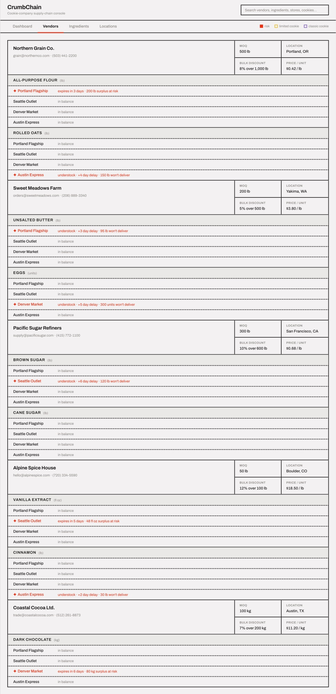
6. Revise and Prototype in Figma Make (Summarized Changes in Make Chat)
Create lo-fi wireframe prototype → Draft 2 Applied the warm espresso color palette across the entire app: #3c1905 (ink), #f3faf8 (background), #b8466a (expiring risk), #7a3310 (understock risk). Replaced all previous colors in all 7 source files.
Draft 2 → Draft 3 Full UI redesign to match a modern card-based supply chain app reference. Moved from bordered table layout to white cards with subtle shadows, KPI stat strip on the dashboard, pill badges for risk status, and leaderboard columns with ranked entry rows.
Draft 3 → Draft 4 Comprehensive accessibility and platform compliance pass: semantic HTML (<header>, <main>, <article>, <dl>), aria-* attributes throughout, rem font sizes for OS text-size scaling, 36px/44px touch targets, mobile fixed bottom tab bar with safe-area insets, visually-hidden labels, keyboard navigation support.
Draft 4 → Draft 5 Added the full inventory transfer feature: TransferPanel split-view sidebar opens when clicking any expiring badge, showing destination store alternatives with checkboxes, store/vendor detail drill-downs, and an “Add to transfer queue” action. Added the Transfers overview page as a 5th tab with a pending-count badge.
Draft 5 → Draft 6 Replaced the simple filter-style search with a live global search dropdown. Results are grouped by Vendors / Ingredients / Locations, each row showing a risk dot, bold name, sublabel with counts, a risk badge, and a right arrow. Clicking navigates to that tab with the item pre-selected.
Draft 6 → Draft 7 Design system refresh to match new reference images: Dashboard KPI tiles redesigned into a 2×2 grid with a dark espresso hero tile, icon circles, large display numbers, and diagonal arrows. Card border radius increased to 20px everywhere. Tab bar became a pill-group segment control. Shadows made more diffuse.
Draft 7 → Final Draft Polish and content fixes: “Understock” renamed to “Insufficient Stock” throughout. Total Shipments moved to top-left hero KPI tile. Vendor names in ingredient drawers made clickable links to the Vendors page. Transfer queue label changed from “Initiate” to “Add to transfer queue” with the ability to uncheck and remove queued transfers. React key prop warning fixed in the Ingredients table.
Main Changes Explained
Visual Design
Competitor Research:
→ Takeaways: clean UI, sans serif typography, tech-app adjacent UI, white background w/ bold colors
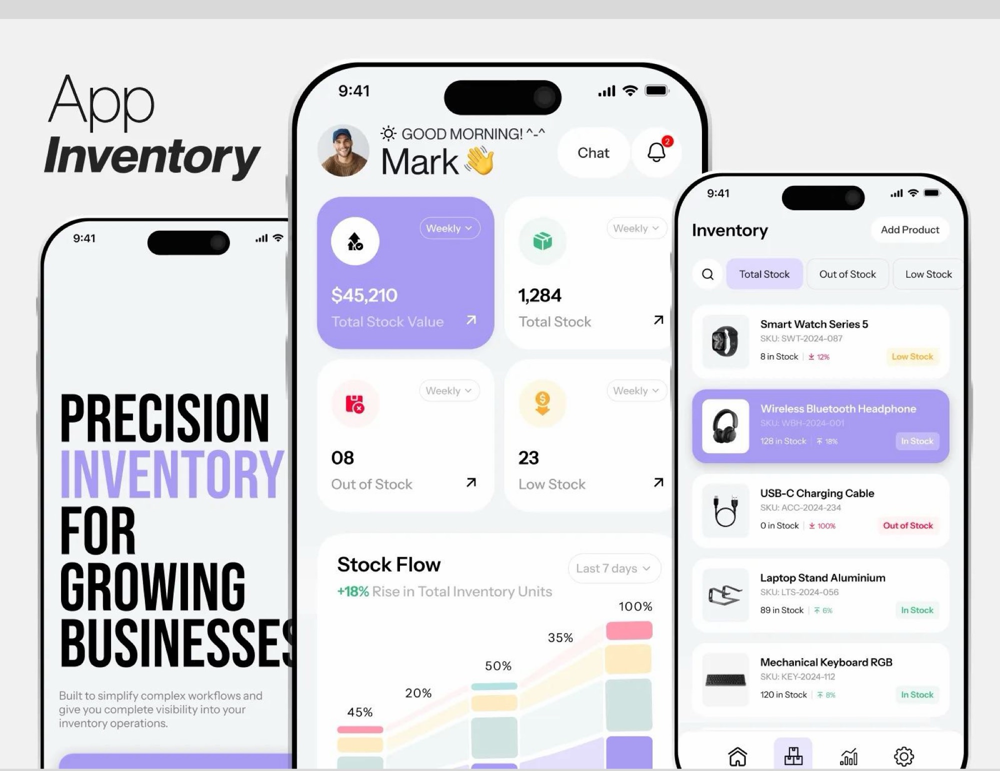
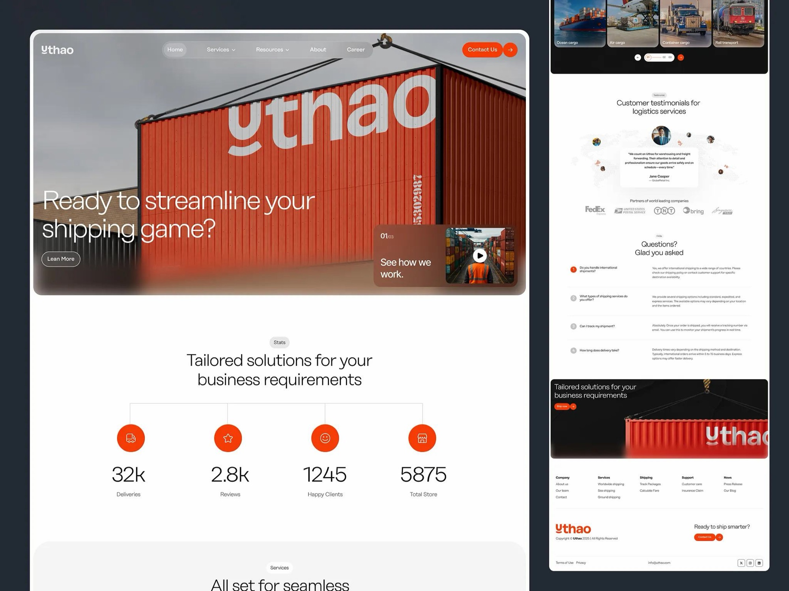
Personalized Take on Competitor Research:
→ Utilize: clean UI, sans serif typography
→ Change: use colors inspired by cookie companies, use illustrations of cookies as icons, logo abbreviating Schumbl Schmookies supply chain manager to 3S+P+C and using the cookie icon as the C (made in Figma)
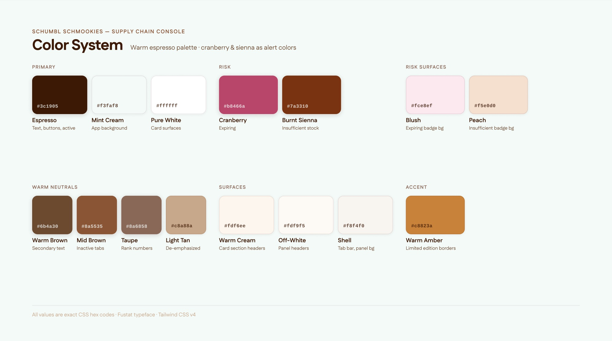
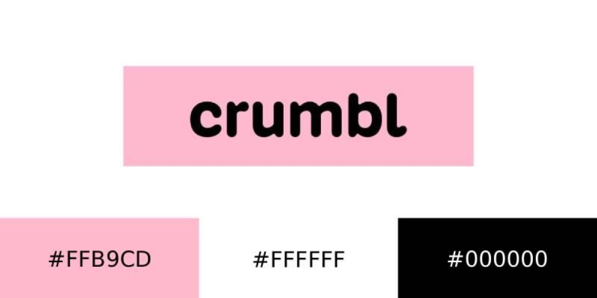
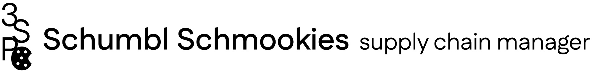
User Flow/Features
→ While testing out the initial prototype, I realized that there was no way to take direct action if there is an insufficient stock/expiration risk issue → add a transfer feature that gives you the option to either give the expiring inventory to the closest available stores with insufficient stock or to contact the best available vendor → then whenever you agree to transfer/add vendor transaction it adds it to a queue that serves as a task list of transfers/vendor contacting needed to do
→ I also realized that searching would be tedious if you just scroll to find information due to the quantity of information → added a search function where you can click and go to the section/page with the information necessary
Finalize a Working Prototype in Figma Make
Utilizing my visual design system, newly described features, design inspiration, and Figma Make I created a working prototype of my idea which can be viewed here: https://plow-number-95700341.figma.site
Snapshots of The Site UI
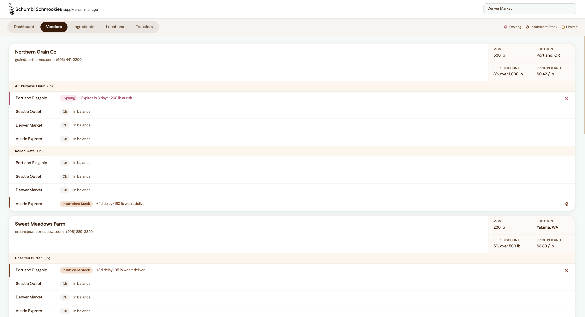
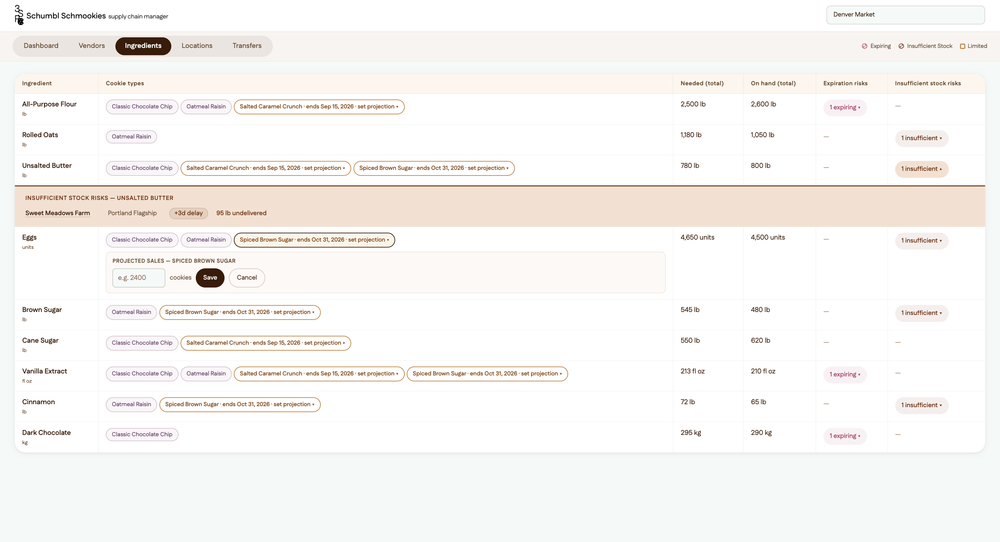
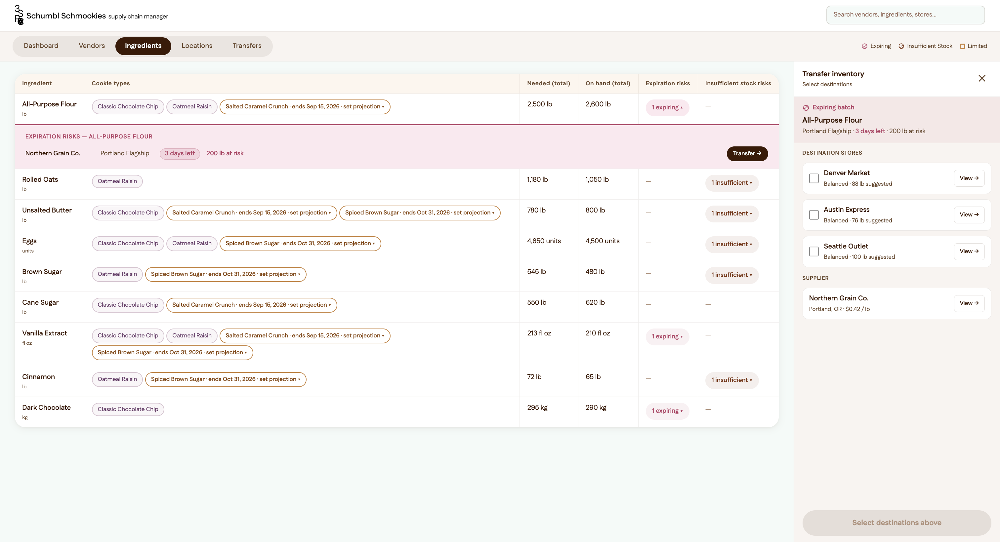
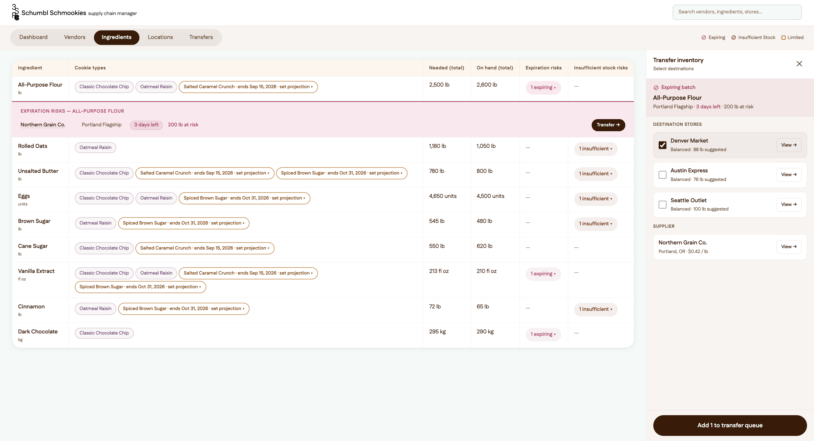
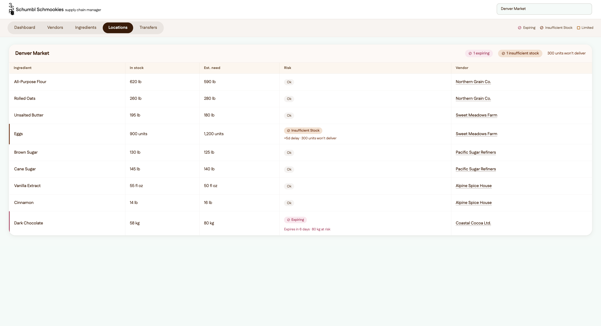
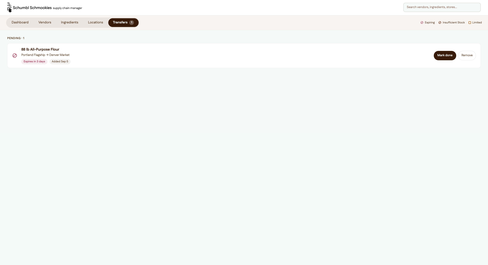
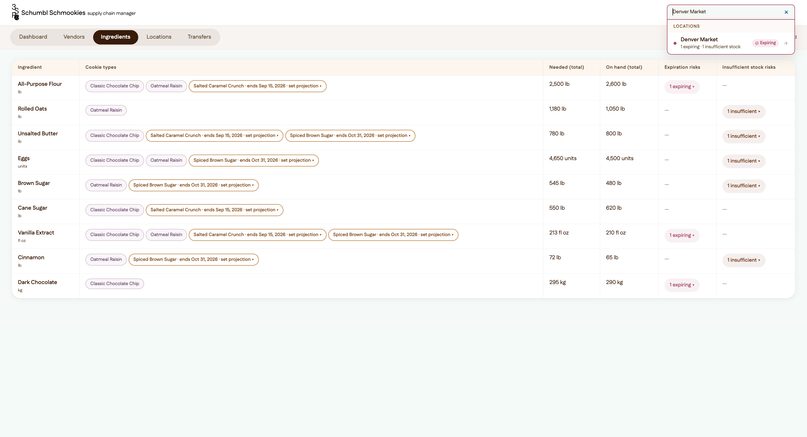